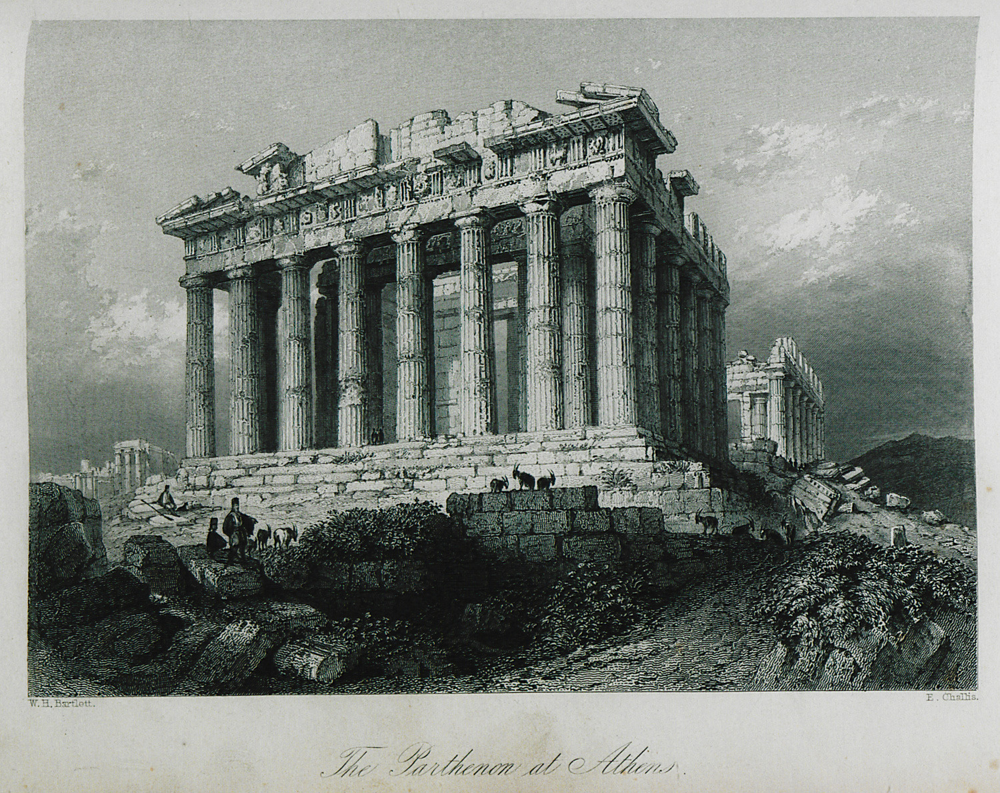
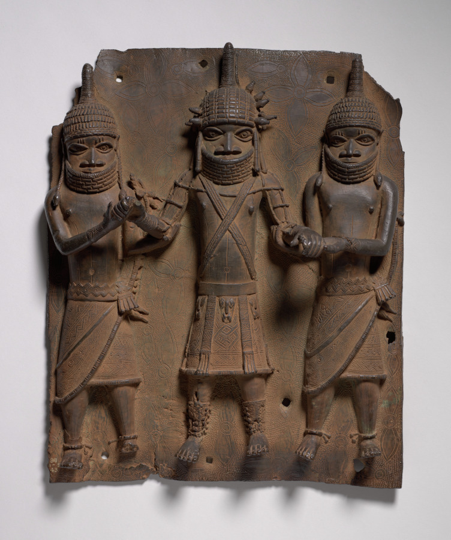
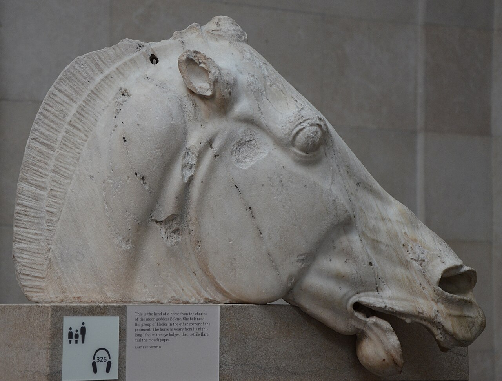
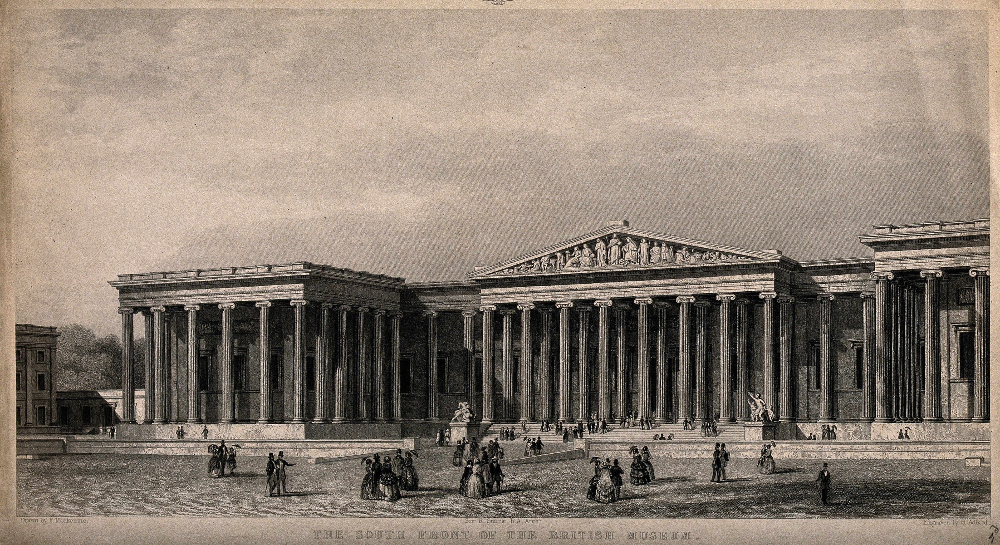
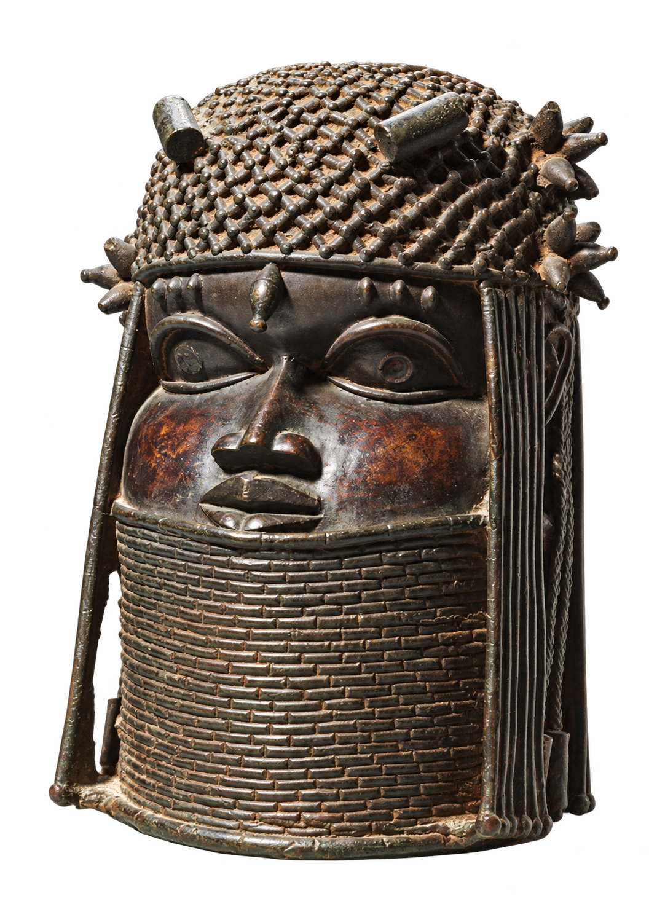
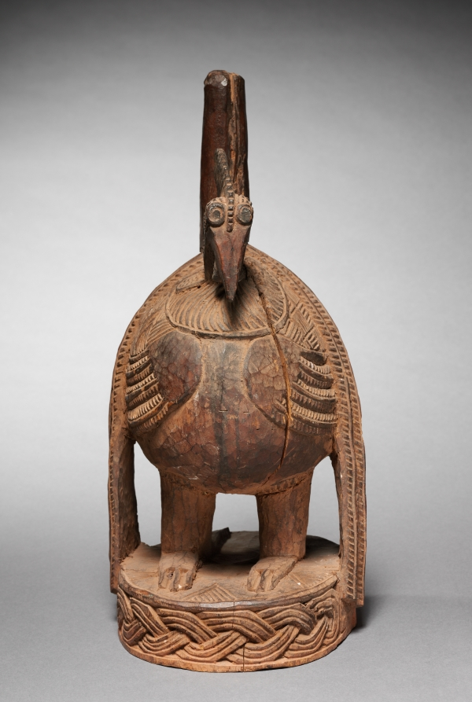

The debate over museum treasures
Who ownshistory?
A beautiful object.
A difficult question.
Should museum treasures return
to their countries of origin?

More thanbeautiful objects
MemoryStories we pass on
IdentityA link to where we belong
PowerWho gets to tell the story?
An object can leave its home.
Its meaning travels less easily.

Cleveland Museum of Art
Case study I / present-day Nigeria
The BeninBronzes
1897
British troops
captured Benin City.
Royal treasures
were looted.
Who had a choice?
Case study II / Greece and Britain
The Parthenonsculptures
A divided monument
- Early 1800s
- Elgin removes sculptures
- 1816
- British Museum acquires them

Photograph: Carole Raddato
Legal permission?
Whose permission?
The casefor keeping
01Access to world cultures
02Care and research
03Collections seen together

A museum for everyone?
The casefor returning
A history closer to home
Local people deserve access.
Original context matters.
Past injustice needs an answer.

If it were yours,
where would it belong?
A way forward
2022
29
Benin objects
Ownership transferred to Nigeria
Return & cooperate
Agree on ownership.
Share through loans.
Research the history together.

Not one of the 29 Smithsonian objects
Our answer
History belongsto people
Their voices belong in the museum.
Return clearly looted objects.
Keep cultural exchange open.
What would a fair museum look like?